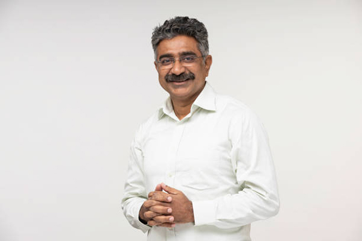

Mr. Shreedhar Patil
Founder & Chairman
Founded Radarsonics with a simple idea: networks should be engineered
and operated with the same care as critical infrastructure. He continues
to mentor engineering leaders and stays involved in marquee programmes.
- Over 35 years in telecom & IT
- Deep experience in switching, transmission and core networks
- Champion for ethical, long-term business relationships
Ananya Desai
Chief Executive Officer
Responsible for Radarsonics' overall strategy, growth and customer
success, Ananya brings together delivery, sales and innovation teams.
- Global experience with operators and enterprises
- Focus on building repeatable delivery models
- Passionate about talent development
Rahul Mehta

Chief Technology Officer
Leads technology strategy across networks, cloud and applications,
ensuring Radarsonics invests in the right skills and platforms.
- Hands-on architect for large transformation programmes
- Oversees reference architectures and accelerators
- Active in industry standards and communities
Leadership & delivery team
Practice & programme leaders
A network of practice heads, delivery directors and regional leaders
who translate the company's vision into day-to-day execution.
- Telecom & IT practice heads
- Regional delivery and field operations leaders
- Programme directors for strategic accounts